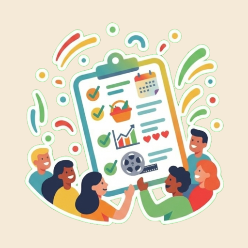
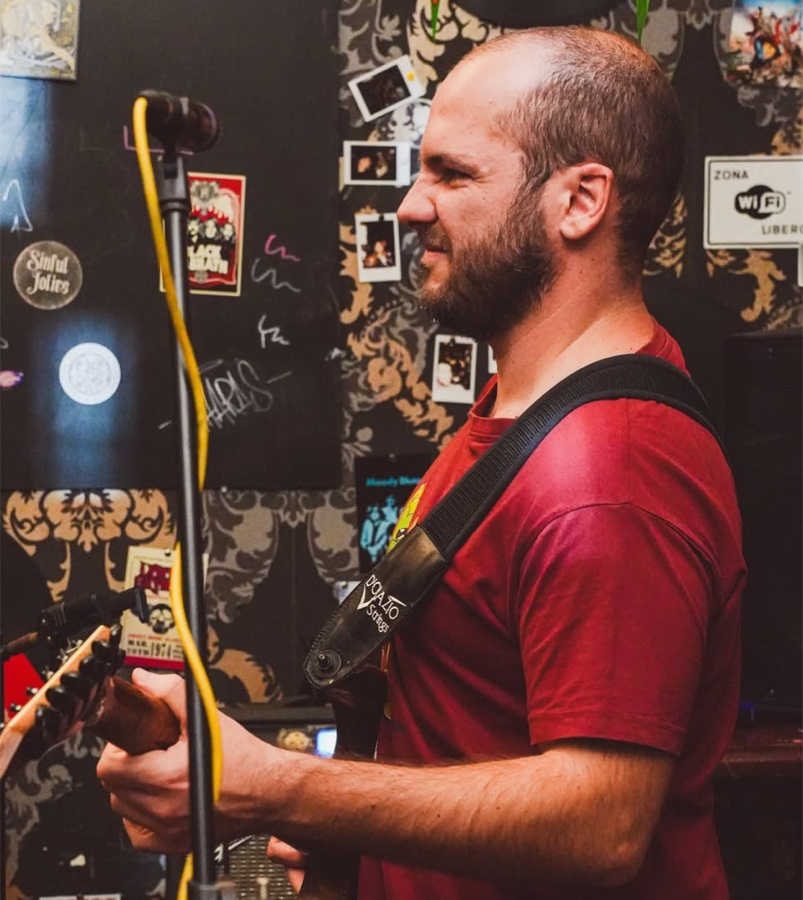

BringIT
Bring-IT is a simple but effective app to organize events, from pizza nights and parties to travels, work meetings and gatherings.
Users create events, invite friends, and plan together what to bring and what to decide.
By day, I’m a backend software engineer who loves architecting systems and building apps—especially ones that bring people together around food and community. When I’m away from the keyboard, you’ll usually find me making music. I play piano and guitar, and I'm currently working my way through learning the saxophone and violin.


Bring-IT is a simple but effective app to organize events, from pizza nights and parties to travels, work meetings and gatherings.
Users create events, invite friends, and plan together what to bring and what to decide.
Senior Backend Software Engineer
Built and ran the Kotlin and Kafka microservices behind Zalando’s order fulfillment and inventory, keeping them reliable through peaks like Cyber Week.
Full-stack and Android Software Engineer
Designed and shipped web and Android apps, working directly with customers in an Agile team.
Have an idea, a project, or just want to talk systems, apps or music? Drop me a message, I'm always happy to connect.
LinkedIn